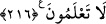

216. Hoşunuza gitmediği halde savaş size farz kılındı. Sizin için daha hayırlı
olduğu halde bir şeyi sevmemeniz mümkündür. Sizin için daha kötü olduğu halde bir
şeyi sevmeniz de mümkündür. Allah bilir, siz bilmezsiniz.
Kâfirlerle savaşma size farz kılındı. Cumhûr-ı ulemâ cihâdın cenâze namazı gibi farz-ı
kifâye olduğu görüşündedir. Yâni müslümanlardan bir topluluğun bu farzı yerine
getirmesi diğerlerini mes’ûliyetten kurtarır. Ancak hiç kimse bu farzı yerine getirmezse
o zaman bütün müslümanlar günahkâr olur. Selâma icâbet de farz-ı kifâyedir. Evet,
“cihâd size farz kılındı, gerçi sizin hoşunuza gitmez ya.” Yâni size meşakkatli
geldiğinden hoşlanmazsınız. Âyetteki “kürh” kelimesi masdar olup “kerâhet”
mânâsınadır. “Kıtal” kelimesine sıfat olmuştur. Bunda belâğat açısından mübâlağa
sanatı vardır. Burada sanki kıtâl, hakikatte hoşlanılmayacak şeyin ta kendisiymiş gibi bir
anlam çıkmaktadır ki; onların ondan hiç hoşlanmadıklarına telmihtir. Aslında bu
hoşlanmama savaştaki mal sarfı ve can meşakkati sebebiyle beşer tabîatının ondan
kaçmasıdır. Yoksa onlar Allah’ın emrini kerih görüyor değillerdi. Tabîat-ı beşeriyyenin
bir şeyden nefreti zemmi mûcib değildir. Bilakis tabîatın hoşlanmamasına rağmen emr-i
ilâhiyyeye imtisâl etmek ubûdiyyetin tahakkukudur. Fakat îtikâden kerih görmek ise
münâfıkların sıfatlarındandır.
Sizin bir şeyi kötü görmeniz, ya da bir şeyden hoşlanmamanız onun hoşlanılmayacak
kötü bir şey olmasını gerektirmez ki. Zira bazen bir şeyden hoşlanmazsınız. Bunlar da
genelde meşakkatli bulunan ve yapmakla mükellef tutulduğunuz şeylerdir -ki savaş da
bunlardan biridir- halbuki hoşlanmadığınız o şey hakkınızda hayırlı olabilir. Meselâ
cihâdda sizin için iki güzel şeyden birisi mutlaka vardır; ya zafer ve ganimet ya da
cennet ve rütbe-i şehâdet.
Sevmediğiniz bir şey hayrınıza olabileceği gibi, bazen hoşlandığınız bir şey de
hakkınızda kötü olabilir. Nefsin hoşlandığı şeyler genelde nehyedilen şeylerdir ki
cihâda gitmeyip oturmak da bu çeşit bir arzudur. Meselâ cihâda gitmeyip geri kalınırsa,
Cenâb-ı Hakk’ın bahşedeceği mükâfatlardan mahrûm olunacağı gibi, ganimet ve
düşmana gâlib gelme nimetleri de elden kaçmış olur. Ayrıca müslümanların yurtları
düşman istilâsına uğramış olur. Şunu unutmamak gerekir; dînî ve dünyevî açıdan sizin
için neyin hayırlı olduğunu ancak Allah bilir. Buna göre bir şeyin yapılmasını, ya da
yapılmamasını emreder. Halbuki siz bilmezsiniz. Bilmediğiniz için de kâfirlerle cihâdı
hoş görmezsiniz. Nitekim Mevlânâ Mesnevî’de der ki:
Tasavvuf nedir? Dedi ki: Ferah bulmaktır.
Gönüle hüzün çöktüğünde ferahlamaktır.
Herkes belâ ve korku zincirine vurulmuştur.
Evliyâ’nın dışında herkes bu yoldan gider
Yâni mukallid, zât-ı hazrete zoraki gider. Oysa velî severek gider.